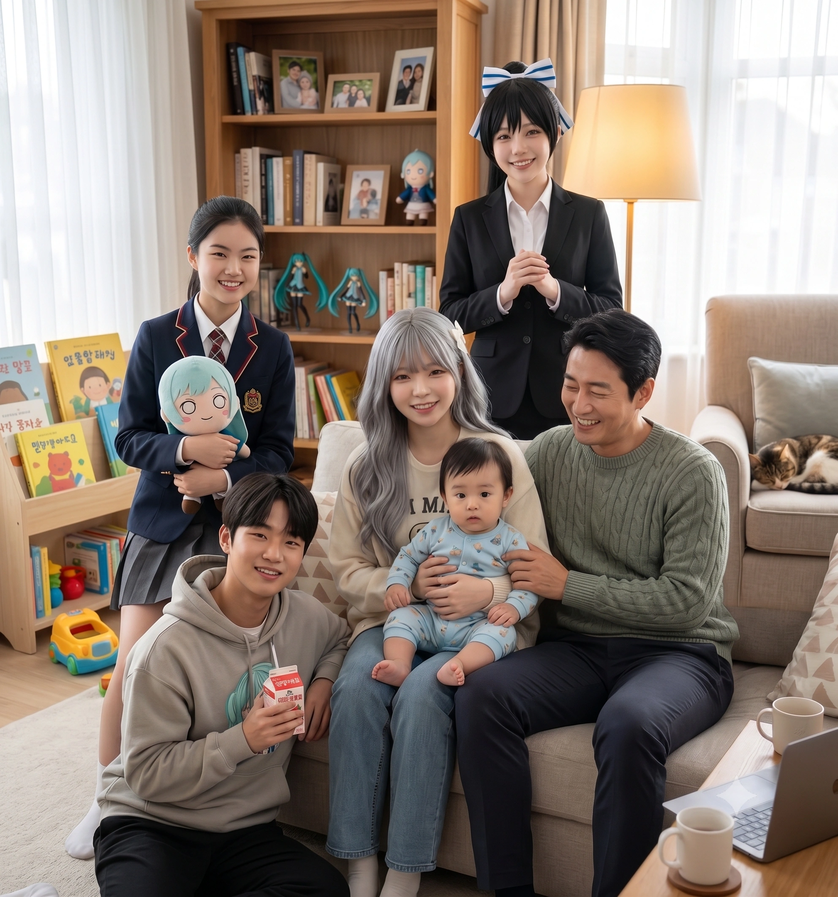

"우리 집안의 평화와 통합은 모두 막둥이 시연이가 태어나면서 완성되었다 데스노!" - 오낙희 (은혜당 매니저)
효빈광역시 서브컬처 성지 리에라몰의 점장 임세혁과 아내 연월엽 사이에서 태어난 넷째(막내딸). 2023년 12월 10일생으로 현재 당가어린이집에 재원 중인 3살 꼬마 천사다.
큰언니 임은혜와는 무려 17살 차이, 오빠 임승민과는 14살 차이, 셋째 언니 임은연과도 10살 차이가 나는 그야말로 '기적의 늦둥이'. 파탄 직전이었던 임세혁 부부가 2022년 리에라몰 초대박 이후 극적으로 화해하며 낳은 결정체로, 존재 자체가 리에라몰 일가의 대통합을 상징한다.
2021년까지만 해도 임세혁과 연월엽 부부는 이혼 직전의 위기를 겪고 있었다. 빚더미에 시달리던 남편과 서브컬처를 극도로 혐오하던 아내의 갈등은 극에 달했다. 그러나 2022년, 리에라몰이 오타쿠들의 성지로 급부상하며 수백억 원의 빚을 단숨에 청산하고 통장에 1,000억 단위의 흑자가 찍히는 거대한 기적이 일어났다.
어마어마한 금융 치료를 받은 아내 연월엽은 과거의 혐덕 성향을 모두 내다 버리고 남편에게 뼈저린 도게자(?)를 시전하며 사과했다. 그리고 남편의 굳어버린 마음을 녹이기 위해 '파격적이고 끈적한 밤의 특별 서비스'라는 초강수를 두었는데... 이 극적인 화해의 밤이 너무나도 뜨거웠던 나머지, 2023년에 30대 후반의 나이로 넷째를 임신하는 대형 사고를 치고 말았다.
임신 소식이 알려졌을 때 집안은 한바탕 뒤집어졌다. 큰딸 은혜와 아들 승민은 "우리 대학생(과고생)인데 독박 육아 짬처리당하게 생겼다!"라며 절규했고, 연월엽 본인도 다 큰 자식들 앞에서 늦둥이를 가졌다는 사실에 부끄러워 며칠을 앓아누웠다. 하지만 2023년 12월 10일, 시연이가 태어나고 산후조리원에서 아기의 배냇짓을 본 순간 온 가족의 멘탈이 완벽하게 심쿵하며 무장 해제되어 버렸다.

17살 차이가 나는 큰언니 임은혜는 시연이가 태어나기 전까지 "나 대학생인데 기저귀 갈다 청춘 다 끝났다 큥!!"이라며 바닥을 구르며 오열했다. 셋째 은연이 때 당했던 끔찍한 독박 육아의 악몽 때문이었다. 하지만 시연이가 태어나자마자 은혜는 자발적으로 아기 띠를 매고 다니는 중증 '동생 바보'로 타락(?)하고 말았다.
심지어 은혜는 자신이 운영하는 인터넷 방송 채널 '은혜당'에 갓난아기 시연이를 안고 등장하기 시작했다. 카메라 앞에서 바보 짓을 하던 은혜 옆에서, 시연이가 옹알이를 하며 메구미 네소베리를 촵촵 빨아대는 모습이 송출되자 시청자들의 반응은 폭발적이었다.
시연이가 딸랑이를 한 번 흔들 때마다 은혜가 하루 종일 춤출 때보다 훨씬 많은 도네이션이 터졌고, 결국 시연이는 은혜당 채널의 비공식 치트키이자 최고 트래픽 메이커로 자리 잡았다. (동업자 오낙희마저 "막둥이 쨩은 100만 유튜버의 인재다 데스노!"라며 군침을 흘렸다고 한다.)
가장 극적인 변화를 겪은 것은 차갑고 논리적인 14살 차이 오빠 임승민이었다. 안천과학고등학교 브레인 승민은 동생이 태어나기 전 "늦둥이 양육에 투입되는 1인당 자본 대비 기회비용은 심각한 마이너스..."라며 계산기를 두드렸다. 하지만 갓난아기 시연이가 고사리 같은 손으로 승민의 손가락을 꽉 쥔 순간, 천재 이과생의 논리 회로(CPU)는 치명적 에러를 뿜어내며 정지하고 말았다.
아기 시절, 시연이가 거실을 기어 다니다 승민이 애지중지하던 '오니츠카 토마리 한정판 아크릴 스탠드'를 입에 넣고 질겅질겅 씹어버린 대참사가 발생한 적이 있다. 평소 누나 은혜가 굿즈를 건드리면 "손해배상 청구하겠다"며 길길이 뛰던 승민은, 시연이의 해맑은 미소를 보자 화를 내기는커녕 오히려 사색이 되어 "아크릴의 화학 성분이 유아의 구강 점막에 미치는 독성 반응을 조사해야 해!!"라며 미친 듯이 논문을 뒤지는 기행을 보였다.
이후 승민의 육아는 철저한 '이과식 육아'로 변모했다. 분유를 탈 때 수온을 소수점까지 맞추고, 시연이의 트림을 유도하는 최적의 등 두드림 각도(45도)와 압력을 물리적으로 계산하여 적용하는 등 동생 육아에 자신의 천재성을 낭비(?)하고 있다.
10살 차이가 나는 셋째 언니 임은연은 "가문의 막내인 만큼 어릴 때부터 철저한 기품과 예절을 가르치겠습니다"라며 엄격한 언니의 포지션을 자처했다.
하지만 시연이가 은연의 단정한 치마폭에 기어 와서 침을 줄줄 흘리며 "언냐, 꺄항!" 하고 안겨 올 때마다, 은연의 철옹성 같은 기품은 1초 만에 박살이 났다. 은연은 황급히 방문을 닫고 아무도 없는 방 안에서 "우루루루! 시연아, 언니 까꿍~!"이라며 온갖 우스꽝스러운 표정을 지으며 아기를 달래는 치명적인 허당기를 보여주었다. (물론 이 장면을 은혜가 몰래 틱톡으로 찍어 남기려다 걸려서 등짝을 맞았다.)
현재 3살(2026년 기준)이 시연이는 당가동에 위치한 '당가어린이집'에 다니고 있다.
시연이가 어린이집에 입소하던 날, 당가어린이집 원장과 교사들은 엄청난 심적 압박에 시달려야 했다. 왜냐하면 효빈시 상권을 쥐락펴락하는 거물 갓물주 부부(임세혁, 연월엽)가 검은색 고급 벤츠를 타고 나타나 딸을 맡겼기 때문이다. 심지어 아버지 임세혁은 "우리 막둥이 밥 투정하면 이거라도 먹여주십시오"라며 리에라몰 4층 프리미엄 푸드코트의 최고급 식재료와 수제 간식을 트럭 단위로 어린이집에 조공하는 만행을 저질렀다.[1]
다행히 시연이는 언니, 오빠들의 끔찍한 사랑 덕분인지 매우 구김살 없고 활발한 성격으로 자라 어린이집에서도 인기가 최고다. 가끔 오후 하원 시간에 오빠 임승민이 과학고 교복을 입고 나타나 시연이를 안고 가거나, 화려하게 꾸민 언니 임은혜가 틱톡을 켜고 데리러 올 때면 어린이집 앞이 리에라몰 일가의 팬미팅 현장으로 변하곤 한다.
효빈대학교 무지개 동호회의 실세이자 은밀한 사이버 국정원급 해킹 능력을 자랑하는 여대생 김시연(2004년생)과는 완벽하게 이름이 똑같은 동명이인(同名異人)이다. 큰언니인 임은혜를 징검다리 삼아 이어지는 이 둘의 관계는 그야말로 '어둠의 사이버 이모(?)와 빛의 성역'이라 할 수 있다.[2]
어느 날 리에라몰 VIP 라운지. 서늘한 에어컨 바람보다 더 오싹한 한기를 풍기며 임은혜에게 은밀한 비즈니스 데이터(악플러 IP 추적 결과)를 넘기러 온 여대생 김시연의 발걸음이 돌연 멈춰 섰다. 그녀의 시선이 꽂힌 곳에는 임은혜가 기적의 늦둥이 막내동생을 품에 안고 다정하게 어르고 있는 평화로운 광경이 펼쳐져 있었다.
아직 세상의 매운맛을 모르는 뽀시래기 생명체가 허공에 작은 두 손을 뻗으며 옹알이를 터뜨리자, 평소 타겟의 과거 행적을 털어낼 때나 번뜩이던 김시연의 안광에 심각한 과부하가 발생했다. 무자비하고 서늘하던 사이버 팩폭 기계의 얼굴이 사르르 녹아내리며, 꿀이 뚝뚝 떨어지는 무장 해제 상태로 아기를 응시하기 시작한 것이다. 고소유가 딴 사람에게 플러팅을 날릴 때마다 반사적으로 켜지던 그 무서운 '죽은 눈'[3] 스위치는 온데간데없이 차단되었고, 그저 맑은 눈망울만이 켜져 있었다.
"어머, 은혜 쨩. 이 귀여운 천사는 누구야?"라며 한껏 하이톤으로 다가오는 김시연을 보며 임은혜는 속으로 기겁하면서도 동생을 소개했다. "우리 집 막둥이 늦둥이야 큥! 이름은 임시연!"
그 순간 라운지에 정적이 흘렀고, 자신과 완벽히 똑같은 이름이라는 것을 안 김시연은 겉치레 필터가 완전히 박살 나면서 세상에서 가장 환한 100% 찐 행복 미소를 활짝 피워올렸다. 이토록 무해하게 기뻐하는 표정은 주변 사람들에게 가히 시각적 충격이었다고 한다. 김시연은 완전히 녹아내린 표정으로 "시연아~ 우리 시연이~ 언니랑 이름이 똑같네? 아이 예뻐라~"라며 아기의 볼을 콕 찌르고 까꿍 놀이를 시전했다. 합법 얀데레 흑막이 갓난아기의 옹알이 한 방에 완벽하게 정화되어버린 역사적인 순간이었다.
물론 갓난아기 앞에서 '죽은 눈'을 시전했다간 아기가 자지러지게 경기(驚氣)를 일으키며 장르가 심령 공포물로 변할 테니 안광을 끄는 게 지극히 당연한 사회적 매너이긴 하다. 하지만 단순한 예의상 미소가 아니라 '극강의 아기 옹알이 + 완벽한 동명이인'이라는 우주적 시너지 덕분에 무장 해제된 바보 웃음이 터져 나온 것이다.
초창기엔 낯을 가리던 시연이도 김시연 특유의 '집요한 맞춤형 오감 놀이 공세' 덕분에 그녀를 완벽한 자기편 언니로 인식하게 되었다. 제법 또박또박 말을 배운 3살(2026년 기준)이 된 임시연의 필살기는 김시연의 심장에 메가톤급 크리티컬 히트를 꽂아 넣는다.
세상 귀여운 생명체가 "시연 언니! 시연이 까까 사듀세요~!" 하고 애교를 부리면, 김시연의 뇌내 알고리즘은 오버히트하며 즉시 체크카드를 꺼내 든다. 편의점 500원짜리 젤리 따위가 아니라, 리에라몰 지하 프리미엄 유기농 디저트 코너로 직행해 프랑스산 무염 버터 아기 쌀쿠키, 유기농 과일 젤리 등을 성분표(화학첨가물 0%)까지 완벽 검수하여 박스째로 안겨준다.
이를 지켜본 은혜는 "저 언니 진짜 무서운 언니 맞지 큥...? 시연이 간식 창고가 마트 하나 채우게 생겼어 큥..." 하며 식은땀을 흘리고, 김시연의 찐친 고소유는 "시연아, 나한테는 맨날 돈 아껴 쓰라더니 저 꼬맹이한텐 트럭째로 사주는 건데?!" 하며 질투에 몸부림쳤다고 전해진다.[4]
임은혜가 고등학생 시절 쓰레기 일진들에게 위기에 빠졌을 때 뼈마디째 털어버리며 구해냈던 은인들, 일명 '아쿠아 어벤져스(참교육 3인방)' 언니들이 2024년 7월 당가동 본가에 초대받아 놀러 온 적이 있다. 살벌한 피지컬의 무법자 언니들이었지만, 생후 7개월 뽀시래기 임시연을 마주한 순간 그야말로 0.1초 만에 전멸하고 말았다.
현관문이 열리자마자 120데시벨 광기 텐션으로 "은혜 쨩~! 언니들 왔다 캉캉!" 하고 사자후를 뽑으려던 고해영의 입을 간호사 이리자가 빛의 속도로 틀어막았다. "쉿! 닥쳐! 이 집에 갓난아기 있다고! 네 쇳소리 들으면 애 경기 일으켜!" 서슬 퍼런 일침에 굳어버린 해영과 함께 거실로 들어선 세 사람은 앙증맞은 노란 병아리 우주복을 입은 생후 7개월 차 임시연을 발견했다.
골목길을 피바다로 만들 뻔했던 카리스마는 산산조각 나고, 거실 공기가 핑크빛 파스텔톤으로 표백되며 세 언니의 내적 비명이 터져 나왔다.
당가동의 무적 수호신 언니들이 바닥을 기어 다니는 진풍경을 보며, 큰언니 임은혜는 에헴 하며 "어때 큥?! 언니들 쓰러질 줄 알았다니까~" 하고 가슴을 쫙 폈다. 그리고 세 사람은 당장이라도 당가동으로 전입신고하고 베이비시터로 취직하겠다며 주접을 떨었다 카더라.